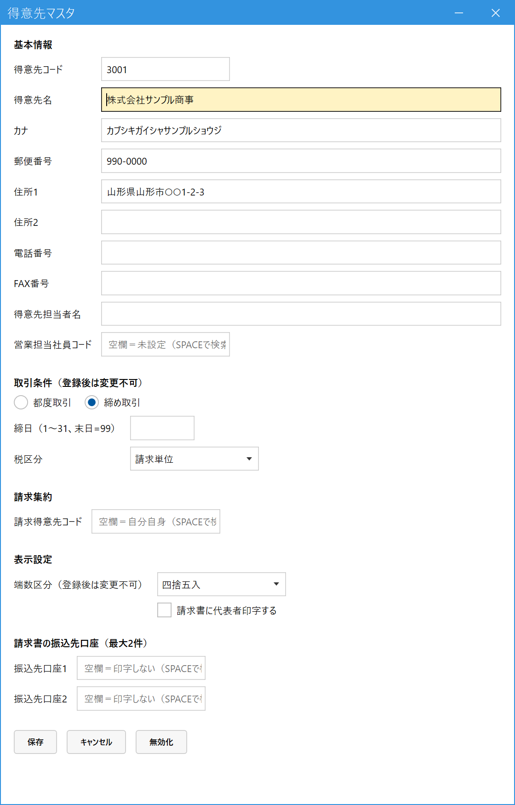

得意先を登録する（得意先マスタ）
こんなときに使います
新しい取引先を登録するとき、住所や担当者を直すとき、取引をやめた取引先を使えなくするときに使います。
受注・売上・入金は、ここに登録された得意先にだけ入力できます。
新しい取引先を登録するとき、住所や担当者を直すとき、取引をやめた取引先を使えなくするときに使います。
受注・売上・入金は、ここに登録された得意先にだけ入力できます。
次の項目は、登録したあとで変えられません。登録前によく確認してください。
・取引条件（都度取引／締め取引）と、それに付く締日・税区分
・端数区分（消費税の端数の処理：切捨・四捨五入・切上）
・取引条件（都度取引／締め取引）と、それに付く締日・税区分
・端数区分（消費税の端数の処理：切捨・四捨五入・切上）
1.画面を開いて、得意先コードを入れる
メインメニューの「マスタ管理」（最初は折りたたまれているので、クリックして開きます）の中の「得意先マスタ」を開きます。
- 新しく登録する：得意先コード欄に、新しいコードを入れて Enter。「未登録です。新規登録として入力してください」と出るので、そのまま続けて入力します。
- 登録済みの得意先を直す：コードを入れて Enter、または Space で検索して選びます。登録内容が表示されるので、直して保存します。
2.項目を入力する
下の例は、「締め取引」の得意先を登録するところです。

- 得意先コード：必須。自社で番号を決めます（他の得意先と重なる番号は使えません）。
- 得意先名・カナ・住所など：得意先名は必須。請求書や納品書に印字されます。カナは検索に使います。
- 営業担当社員コード：任意。入れると、受注・売上の担当者の初期値になります（Space で検索）。
- 取引条件：都度取引（官公庁・学校など、1件ごとに請求するお客様）か、締め取引（月ごとにまとめて請求するお客様）を選びます。登録後は変更できません。
- 「締め取引」を選ぶと、締日（1〜31、末日は99）と税区分（請求単位／伝票単位）の入力欄が出ます。「都度取引」の得意先は、金額に消費税を含めて扱います（内税明細単位）。
- 請求得意先コード：他の得意先の分もまとめて請求するときだけ入れます（例：支店の請求を本社にまとめる → 支店側に本社のコードを入れる）。空欄なら、その得意先自身に請求します。
- 端数区分：消費税の端数の処理（切捨・四捨五入・切上）。登録後は変更できません。
- 保存で登録します。入力をやめて画面を空にしたいときはキャンセル。取引をやめた得意先は無効化で、新しい伝票に使えなくなります（過去の伝票は残ります）。
その他の項目
| 項目 | 説明 |
|---|---|
| 請求書に代表者印字する | チェックすると、この得意先宛ての請求書に自社の代表者名が印字されます。 |
| 請求書の振込先口座（最大2件） | 請求書に印字する振込先。コード欄で Space を押して、あらかじめ「銀行マスタ」に登録した口座から選びます。空欄なら印字されません。 |